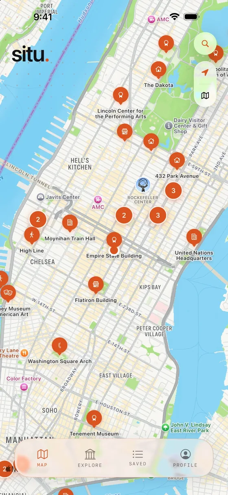
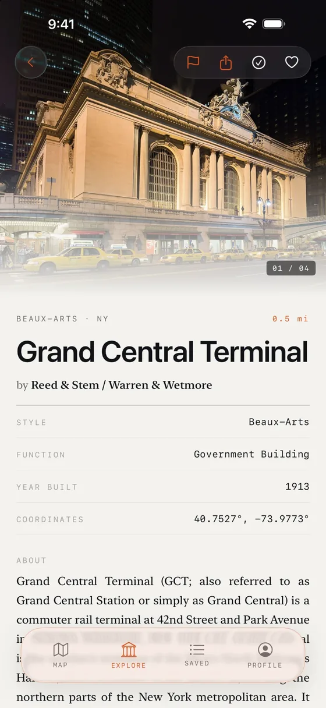
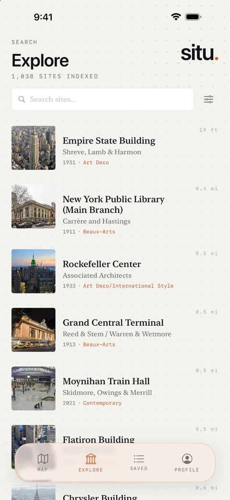
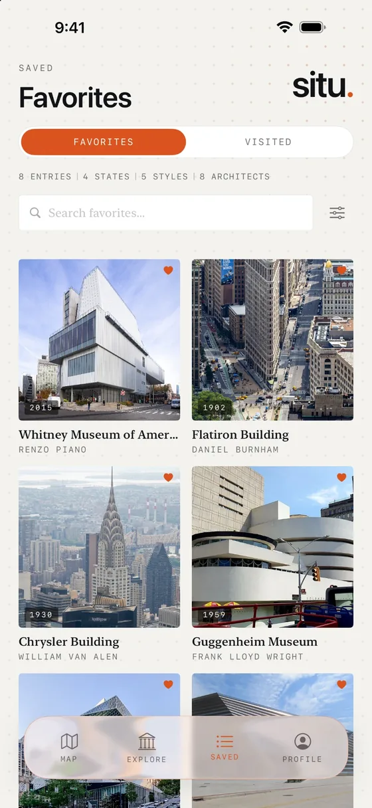
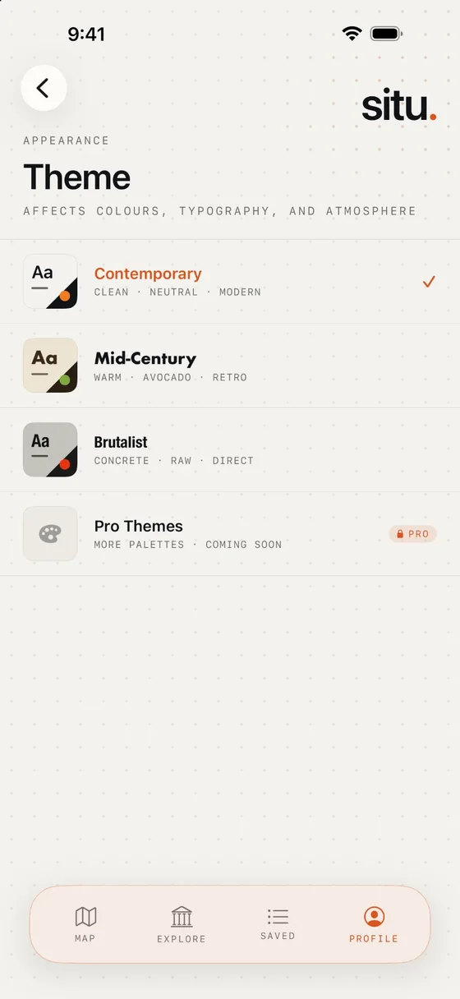

Situ puts 1,000+ architectural landmarks on a map in your pocket — read who built each one and why it matters, and keep a list of the places you love.


Point your attention at a building and Situ tells you what you're looking at — curated, editorial, and quietly in the background.
A curated catalog of architectural landmarks, each with its architect, year, style and function — and the story behind the façade.
Every site is a category pin on the map, and dense areas cluster into counts. Tap one to see exactly what you're standing in front of.
Search the whole catalog by name and filter it down to what you're curious about, with the distance to each site from where you are.
Save the places you love and mark the ones you've been to. Both lists live on your device, with a running tally of states, styles and architects.
Spot a missing landmark or a mistake? Submit it or flag a correction — contributions go through editorial review before they're published.
No account to create, no ads, and no behavioral tracking — just anonymous crash reports so we can fix bugs. Your location is used on-device to find what's nearby.
Five screens from the app, straight from the App Store.



The map, the catalog, the story behind each building and a list of your own — the same preview you'll find on the App Store.
Each theme restyles the colors, typography and atmosphere of the whole app. Pick yours in Profile → Theme. More palettes are coming with Situ Pro.
Set once in Profile → Theme · Applied everywhere
Every landmark is sorted into a category — so the map stays legible and you can filter for exactly what you're curious about.
Situ collects as little as possible. It works the moment you open it — no sign-up, no profile, no sales pitch.
Opens anonymously. We never ask for your name or email.
No advertising or behavioral-analytics SDKs, no ad identifiers. Just anonymous crash reports.
Used to show what's nearby. It isn't transmitted to or stored by us.
Favorites and Visited stay on your device and leave when you delete the app.
Free on the App Store. Spotted a landmark that's missing, or a correction to make? Flag it in the app, or tell us directly.